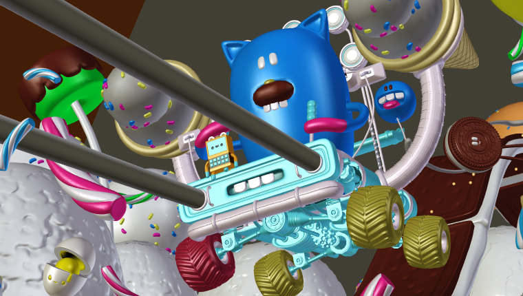

Зображ з OpenGL -- OpenGL Render¶
Зображування, рендеринг з OpenGL використовується для прорисування 3D Огляду -- 3D View для швидкого передогляду, попереднього огляду -- preview зображів, рендерів.
Це дозволяє вам перевіряти ваш аніматик -- animatic (на відповідність переміщення об'єктів, зміни кутів тощо).
Це може також використовуватися для передогляду ваших анімацій -- у разі, якщо ваша сцена є надто складною для устаткування, щоб відтворюватися у реальному часі у 3D Огляді -- 3D View.
Ви можете вживати OpenGL для зображу, рендеру як зображень, так і анімацій.
Below is a comparison between the OpenGL render and a final render using the Cycles Renderer.

OpenGL render. |

Full render. |
{kind=link}
Mẹo
Показування лише відзображених об'єктів
Для доступу до цієї опції увімкніть «Лише Зображ» -- Only Render на панелі «Показ» -- Display Panel.
Хоча ця опція не є специфічною для зображування з OpenGL, її часто корисно вмикати, оскільки вона вилучає показ таких даних, як оснастки та порожняки, що можуть відволікати.
Устави -- Settings¶
Орієнтир -- Reference
| Editor: | Info Editor |
|---|---|
| Menu: |
For the most part, OpenGL Render uses the viewport settings, Sampling and Alpha Transparency Mode options can be set by the from the Info Editor header. Additionally, some render settings are used too:
- Розміри -- Dimensions зображу
- Пропорція -- Aspect зображу
- File Format & Output (file path, format, compression settings, etc.)
Зображування, рендеринг -- Rendering¶
Активування зображу з OpenGL з цього меню буде рендерити сцену через огляд активної камери.
You can also render any viewport, from the header of the 3D View, using the small button showing a Camera.

Кнопки Зображу з OpenGL.
Як і для звичайного зображування, ви можете зображ з OpenGL переривати за допомогою Esc.
- Зображ Статичного Зображення -- Render a Still Image
Клацайте на кнопці з іконкою камери у заголовку 3D Огляду -- 3D View.
Або через меню: «Зображ > Зображ Зображення з OpenGL» -- із заголовку редактора Інфо -- Info Editor
- Зображ Анімації -- Render an Animation
Клацайте на кнопці з іконкою відеонумератора у заголовку 3D Огляду.
Чи з меню: «Зображ > Зображ Анімації з OpenGL» із заголовку редактора Info Editor
- Зображ з Відеорядника -- Render from the Sequencer
Клацайте на кнопці з іконкою відеонумератора у заголовку регіону передогляду Редактора Відеорядів -- Відеорядника -- Sequencer.
Використовуючи смужки сцен у Відеоряднику, ви можете редагувати разом ці сцени для швидкого зображу, рендеру усього відеоряду, послідовності знімків.
Це може активовано за допомогою іконок зображу у заголовку відтворення Відеорядника -- Sequencer.
Відомі обмеження¶
Підтримка загладжування з OpenGL¶
Деякі відеокарти не підтримують цю функцію (відому як розширення буфера кадрів багато-вибірки з OpenGL).
У такому випадку зображування працюватиме, але загладжування -- anti-aliasing не здійснюватиметься.
Вмикання опції «Повна Вибірка» -- Full Sample може використовуватися, як обхід цього обмеження, оскільки воно не опирається на підтримку багато-вибірки устаткуванням.
Gợi ý
Необхідні точні розширення, що перелічені у виводі довідки -- Зберегти Системну Інформацію -- Save System Info (підрозділ OpenGL):
GL_ARB_texture_multisampleGL_EXT_framebuffer_blitGL_EXT_framebuffer_multisample_blit_scaledGL_EXT_framebuffer_multisample